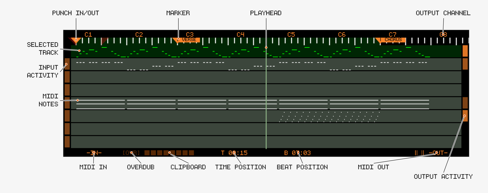
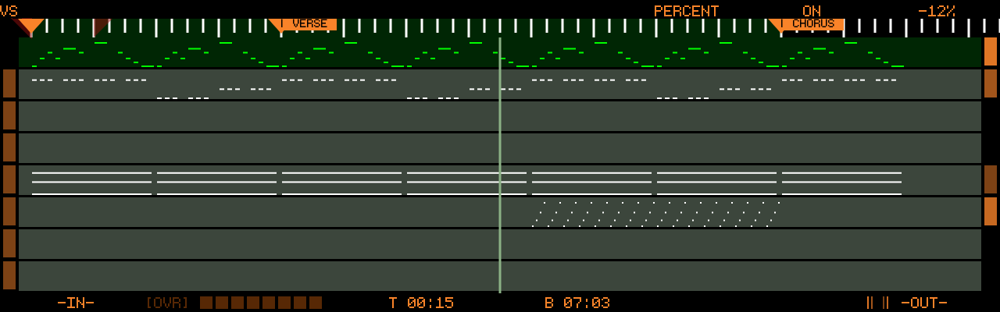

MIDI Overview
Track8 treats MIDI similarly to audio:
- Linear timeline (linked to the audio timeline)
- Per-track editing with Cut/Copy/Paste
- Real-time + step recording (see MIDI Edit)
🖥 MIDI Overview

Track Behavior
Track8 aims to make MIDI routing as simple as possible. Instead of listing all connected MIDI devices Track8 introduces a Track to MIDI Channel mapping.
- Each track = one MIDI output channel
- MIDI input → always routed to active track
- It does not matter on which MIDI Channel incoming notes/CCs are
- Channel Information of incoming MIDI signals is discarded and always routed to the selected Track
Devices flagged as control surface in
UTILITY→MIDI→DEVICEare the exception: their CCs drive MIDI Remote Control instead of being recorded (since v1.1.4).
🎛 Encoders
Press any encoder to cycle through six encoder modes:
CHANNEL → OFFSET → SCROLL → REC OFFSET → QUANTIZE → VARISPEED
Or jump directly with 
CHANNEL, 2 = OFFSET, 3 = SCROLL, 4 = REC OFFSET, 6 = QUANTIZE, 7 = VARISPEED.
CHANNEL
- Sets the MIDI output channel (1–16) per track
- Channels already used by another track are skipped
- Playback stops while changing channels
OFFSET
- Per-track MIDI timing offset, -100ms to +100ms
- Use

SCROLL
- Encoder 8 scrolls the timeline, Encoder 1 changes the scroll increment
- While SCROLL is active, the beat ruler shows the scroll increment as shorter ticks between the beats, like the grid in MIDI Edit (since v1.2.2-SNAPSHOT)
- Encoder 7 zooms the timeline, 0.25x to 4x around the playhead (since v1.2.2-SNAPSHOT). The zoom is remembered per overview (Audio and MIDI zoom independently) and resets to 1x on startup
- A mouse scroll wheel (USB) also scrolls the timeline (since v1.1.1)
- Encoder 5 → SPLICE: insert or remove time at the playhead (new in v1.2.2-SNAPSHOT)
- Turn clockwise to stage blank time, one SCROLL step per click; counter-clockwise to stage a removal. The overview previews the result — notes, markers and loop/punch points are drawn where they will end up, an insert shows the blank as a band, a removal a cut line — and the encoder label shows the amount (
+1 bar,-2 beats) - Push Encoder 5 to apply. Any button press (PLAY included), Encoder 1 or Encoder 8, switching screens or the encoder mode discards the staged splice — only Encoder 5 itself and SHIFT leave it alone. Nothing changes until you push; the drawing is the preview
- It is the same operation as on the Audio Overview: everything behind the splice point moves — all MIDI tracks (notes, CC, pitch-bend, aftertouch), all audio tracks with their automation, and the markers, loop and punch points. CC / pitch-bend / aftertouch set inside a removed span carry their last value over to the splice point
- Removals are limited to 1:30 per splice and refused over a tempo or signature marker; see the Audio Overview page for the full rules
- Turn clockwise to stage blank time, one SCROLL step per click; counter-clockwise to stage a removal. The overview previews the result — notes, markers and loop/punch points are drawn where they will end up, an insert shows the blank as a band, a removal a cut line — and the encoder label shows the amount (
REC OFFSET (new in v1.2.1)
- Per-track MIDI record offset, 0 to -50 ms — the MIDI counterpart of the audio REC OFFSET
- Recorded notes and CCs are stored this much earlier than they arrive. Use it when your takes land late on the grid: what you hear while recording (metronome, tracks) reaches your monitors after the audio output latency, so notes played in time with it arrive that much late
- Start with roughly your audio buffer latency and adjust by ear; it applies to live recording only (not step record)
- Turn left to increase (shifts earlier), like the audio REC OFFSET
QUANTIZE (new in v1.2.1)
Record quantize: while enabled, incoming MIDI notes are snapped to the grid as they are recorded.
- Encoder 6: quantize grid,
1/4to1/64— push to toggle triplets (e.g.1/16T), like the grid encoder in MIDI Edit - Encoder 7: enable/disable record quantize
- Encoder 8: strength,
0%to100%—100%puts notes exactly on the grid, lower values move them only part of the way, keeping some of the human feel - The note start is quantized to the nearest grid line; the note keeps exactly the length you played
- Applies to notes as they are stored, on all further takes until switched off — already recorded notes are untouched (quantize those with the
EDITtool in MIDI Edit) - Step recording is unaffected: it always snaps to the step grid
- The setting is saved with the project
VARISPEED (since v1.1.5)
- Encoder 6: display in Percent or Semitones
- Encoder 7: enable/disable Varispeed
- Encoder 8: amount — positive = faster, negative = slower (-100% = half speed, +100% = double speed, or ±12 semitones)
- Recording with Varispeed is limited to one track, and the amount cannot be changed while a recording is running
- Playback audio is degraded; recorded audio is resampled at a higher quality

🔘 Track Buttons
- Press a Track Button to select the active track
Track Button→ Mute / Unmute- Hold
Track Button→ Solo / Un-solo (since v1.1.2) - Hold
Track Button→ select the same track for Audio and MIDI (since v1.1.3)
Solo behavior
- Solo ignores the Mute state of the track
- Soloed tracks are rendered in the highlight color (orange in the default theme), all other tracks in their muted color
- Toggling any Mute (
Track Button) exits solo mode
📊 Indicators
Input Activity
- Shows incoming MIDI channel
Output Activity
- Shows outgoing MIDI activity
Quick Settings
- Touch and hold the track area (about a second) to open the Quick Settings panel with the everyday Utility toggles (MKR LEG, MOD HI, BIG TIME, SHIFT HOLD, SHIFT NAV, TIMED JUMP, SHIFT PLAY, PASTE JMP, SCROLL SND, TAPE SND, OVERDUB); see Touch (since v1.2.2-SNAPSHOT). The CLIPBOARD shortcut is only available on the Audio Overview
Time / Beat readout
- Touch the time / beat readout at the bottom of the screen to toggle BIG TIME, the big translucent time / bar-beat overlay on the left half of the screen — the same toggle as on the Audio Overview (since v1.2.2-SNAPSHOT)
Clipboard
- Same behavior as audio
- The indicator highlights the origin Track of the clipboard content
- Cut/Copy always adheres to the regions defined by Markers
- Hold
- Paste always goes to the Playhead position on the selected track and — like audio — replaces what is there for the length of the clipboard (notes, controllers, pitchbend, aftertouch); it does not merge onto existing events (since v1.2.1, before that Paste merged)
- Each action confirms on screen:
Copy Loop: Audio + MIDI + Markers,Cut Loop: Audio + MIDI + Markers,Paste Audio + MIDI + Markers - LOOP + Paste writes back every copied MIDI track: one that was silent in the copied section clears its destination span, like the audio side pastes silence there; tracks muted at copy time are left alone (since v1.2.2-SNAPSHOT)
- After such a LOOP Cut/Paste,
Recordundoes the MIDI and the audio half in one press (UNDO Audio + MIDI), Markers included, and
🚀 Undo / Redo
MIDI has its own Undo stack, separate from audio.
Record→ Undo the last MIDI operation- Both confirm what they touched with a short overlay, e.g.
UNDO Track 2: BassorREDO all tracks(new in v1.2.1) - A SPLICE is undone as a whole: one Undo reverts the MIDI and the audio side, from either screen (markers keep their post-splice positions) (new in v1.2.2-SNAPSHOT)
🔁 Loop & Punch
- Same concept as audio workflow
- Applies to MIDI recording
Threshold Recording via MIDI (since v1.1.3)
Incoming MIDI notes can trigger threshold recording. For this you have to be in one of the MIDI views, or A && M recording has to be enabled in the Project Settings.
🎧 MIDI Monitor (new in v1.2.1)
Incoming MIDI is echoed to the output channel of the selected track. This can now be switched off independently of the audio monitor:
- In the Project Settings, push Encoder 8 to cycle between
AUDIO MONandMIDI MON, then turn to setOFF/ON/PUNCH PUNCHechoes input only while the playhead is inside the punch brackets — whether or not punch recording is armed — so a rehearsal pass sounds exactly like the recorded result (new in v1.2.1)- Defaults to
ON - Note-off messages always pass, so no notes get stuck
🕰 MIDI Sync
Clock and MTC sync are configured in UTILITY → MIDI (see Utility):
SYNC MODE:CLOCKorMTCSYNC ROLE:MASTERorSLAVE- Clock mode: send/receive SPP, Transport and Clock individually
- MTC mode: frame rate (24/25/29.97/30 fps) and, as slave, an MTC offset
Clock sync has been hardened over several releases (tighter DIN clock since v1.1.1, larger averaging and outlier detection for slave sync, further MIDI scheduling and jitter improvements new in v1.2.1).
The DEVICE, CONTROL and CH NAMES buttons on this screen configure MIDI Remote Control, channel names and MIDI Device Profiles (per-channel note/CC names for drum machines and synths, since v1.2.1).